Zeeman Intensities¶
Calculation of Zeeman Intensities¶
Condon and Shortley (1967) give the following equations for calculating the relative intensities of Zeeman components:
![<\alpha, J, M \| T \| \alpha, J+1, M\pm 1>^2 &= \frac{1}{4} \left(J\pm M+1\right)\left(J\pm M+2\right) \left(\bold{\hat{i}}\pm \bold{\hat{j}} \right)\\
<\alpha, J, M \| T \| \alpha, J+1, M>^2 &= \left(J+1\right)^2 - M^2 \bold{\hat{k}}\\
<\alpha, J, M \| T \| \alpha, J, M\pm 1>^2 &= \frac{1}{4} \left(J\mp M\right)\left(J\pm M+1\right) \left(\bold{\hat{i}}\pm \bold{\hat{j}} \right)\\
<\alpha, J, M \| T \| \alpha, J, M>^2 &= M^2 \bold{\hat{k}}\\
<\alpha, J, M \| T \| \alpha, J-1, M\pm 1>^2 &= \frac{1}{4} \left(J\mp M\right)\left(J\mp M-1\right) \left(\bold{\hat{i}}\pm \bold{\hat{j}} \right)\\
<\alpha, J, M \| T \| \alpha, J-1, M>^2 &= J^2 - M^2 \bold{\hat{k}}](../_images/math/847798e6b065c8e3e7e8c58df01fb52b8418aed5.png)
Case A¶
My naive assumption is to divide up the opacity contained in the original (unsplit) line between the Zeeman components by adjusting their oscillator strengths accordingly, normalizing so that the sum of the oscillator strengths of all the Zeeman components equals the oscillator strength of the unsplit line.
For example, consider the following spectral line: 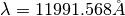, Si,  . For this transition, the
upper and lower states have total angular momentum numbers of 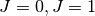, respectively. The Zeeman effect will split the lower
state into three sublevels (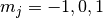), while the upper state will remain a single level (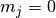). In the simplest of all
configurations, the initial line splits into three Zeeman components (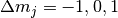). Calculating the relative intensities of
the three components, the two sigma (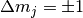) components should have a relative
intensity of 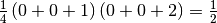. The Pi component (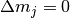) should have a
relative intensity of 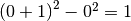.
. For this transition, the
upper and lower states have total angular momentum numbers of 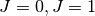, respectively. The Zeeman effect will split the lower
state into three sublevels (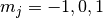), while the upper state will remain a single level (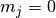). In the simplest of all
configurations, the initial line splits into three Zeeman components (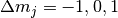). Calculating the relative intensities of
the three components, the two sigma (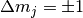) components should have a relative
intensity of 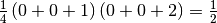. The Pi component (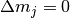) should have a
relative intensity of 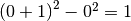.
I interpret this to mean that the  component is twice as strong as either of the
component is twice as strong as either of the  components. In order to
reflect this, I adjust the oscillator strength of the component to be 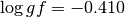, and the oscillator strength
of each of the two components to be 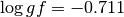. This way of dividing up the oscillator strengths ensures
that the component is twice as strong as the components, and that the total opacity in the three lines
is the same as the opacity in the unsplit line.
components. In order to
reflect this, I adjust the oscillator strength of the component to be 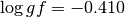, and the oscillator strength
of each of the two components to be 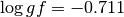. This way of dividing up the oscillator strengths ensures
that the component is twice as strong as the components, and that the total opacity in the three lines
is the same as the opacity in the unsplit line.
However, when calculating the elements of the opacity matrix, this does not seem to asymptote to the correct value of the opacity at the limiting case of 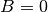:
![\Phi_I &= \frac{1}{2} \phi_p \sin^2 \gamma + \frac{1}{4}\left(\phi_r+\phi_b\right)\left(1+\cos^2\gamma\right)\\
\Phi_Q &= \frac{1}{2} \left(\phi_p-\frac{1}{2}\left(\phi_r+\phi_b\right)\right)\sin^2\gamma\cos 2\chi\\
\Phi_U &= \frac{1}{2} \left(\phi_p-\frac{1}{2}\left(\phi_r+\phi_b\right)\right)\sin^2\gamma\sin 2\chi\\
\Phi_V &= \frac{1}{2} \left(\phi_r-\phi_b\right)\cos \gamma\\
\Psi_Q &= \frac{1}{2} \left(\psi_p-\frac{1}{2}\left(\psi_r+\psi_b\right)\right)\sin^2\gamma\cos 2\chi\\
\Psi_U &= \frac{1}{2} \left(\psi_p-\frac{1}{2}\left(\psi_r+\psi_b\right)\right)\sin^2\gamma\sin 2\chi\\
\Psi_V &= \frac{1}{2} \left(\psi_r-\psi_b\right)\cos \gamma](../_images/math/de1f044d9d0c13010592d42104ae25c7fac34bb1.png)
where  are the absorption profiles and
are the absorption profiles and  are the anomalous dispersion profiles for the unshifted
component, and blue/red-shifted components, and 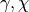 are angles related to the magnetic field
vector.
are the anomalous dispersion profiles for the unshifted
component, and blue/red-shifted components, and 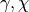 are angles related to the magnetic field
vector.
In the limiting case where , and 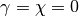, we are looking at the center of a stellar disk of an unmagnetized star. Since , the wavelength shift due to the Zeeman effect is zero, and all Zeeman components lie on top of each other, and the spectrum should be identical to the spectrum calculated by a scalar code (i.e. Moog).
In Case A, the absorption and anomalous dispersion profiles differ for the different Zeeman components (i.e. 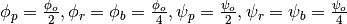), so the elements of the opacity matrix become:
![\Phi_I &= \frac{1}{2} \frac{\phi_o}{2} \sin^2\left(0\right) + \frac{1}{4}\left(\frac{\phi_o}{4}+\frac{\phi_o}{4}\right)\left(1+\cos^2\left(0\right)\right)\\
&= \frac{1}{4} \phi_o 0 + \frac{1}{4}\left(\frac{\phi_o}{2}\right)\left(1+1\right)\\
&= \frac{\phi_o}{4}\\
\Phi_Q &= \frac{1}{2} \left(\frac{\phi_o}{2}-\frac{1}{2}\left(\frac{\phi_o}{4}+\frac{\phi_o}{4}\right)\right)\sin^2\left(0\right)\cos\left(0\right)\\
&= 0\\
\Phi_U &= \frac{1}{2} \left(\frac{\phi_o}{2}-\frac{1}{2}\left(\frac{\phi_o}{4}+\frac{\phi_o}{4}\right)\right)\sin^2\left(0\right)\sin\left(0\right)\\
&= 0\\
\Phi_V &= \frac{1}{2}\left(\frac{\phi_o}{4}-\frac{\phi_o}{4}\right)\cos\left(0\right)\\
&= 0\\
\Psi_Q &= \frac{1}{2} \left(\frac{\psi_o}{2}-\frac{1}{2}\left(\frac{\psi_o}{4}+\frac{\psi_o}{4}\right)\right)\sin^2\left(0\right)\cos\left(0\right)\\
&= 0\\
\Psi_U &= \frac{1}{2} \left(\frac{\psi_o}{2}-\frac{1}{2}\left(\frac{\psi_o}{4}+\frac{\psi_o}{4}\right)\right)\sin^2\left(0\right)\sin\left(0\right)\\
&= 0\\
\Psi_V &= \frac{1}{2}\left(\frac{\psi_o}{4}-\frac{\psi_o}{4}\right)\cos\left(0\right)\\
&= 0\\](../_images/math/943946ed3f2df1919ceb4f564505992862a15f18.png)
All elements in the opacity matrix are zero, except for the 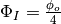, only a fourth of what I would expect it to be.
Case B¶
However, Synthmag and other polarized radiative transfer codes don’t seem to divide up the opacity this way. Equation 11 in Rees et al. (1989) says that “the corresponding strength of this component is 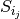 where :
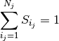
for 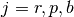, where 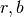 correspond to the 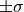 components, and  correspond to the
components. If I’m interpreting this correctly, the normalization of oscillator strengths should be done three times (corresponding
to
correspond to the
components. If I’m interpreting this correctly, the normalization of oscillator strengths should be done three times (corresponding
to  ). In other words, the sum of oscillator strengths for all components should equal the
original oscillator strength for the unsplit line. The sum of oscillator strengths for all 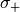 components should also equal
the original oscillator strength for the unsplit line. Similarly, the sum of oscillator strengths for all 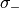 components
should also equal the original oscillator strength for the unsplit line. So, for the example described above, the oscillator strength for
each of the Zeeman components of the Si line will be 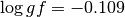.
). In other words, the sum of oscillator strengths for all components should equal the
original oscillator strength for the unsplit line. The sum of oscillator strengths for all 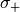 components should also equal
the original oscillator strength for the unsplit line. Similarly, the sum of oscillator strengths for all 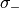 components
should also equal the original oscillator strength for the unsplit line. So, for the example described above, the oscillator strength for
each of the Zeeman components of the Si line will be 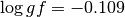.
While I don’t particularly understand the physical reason for this “normalization,” I can at least see how it fits into the calculations of the elements 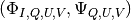 of the opacity matrix:
In Case B, the absorption and anomalous dispersion profiles for each Zeeman component are the same (i.e. 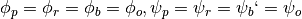), so the elements of the opacity matrix become:
![\Phi_I &= \frac{1}{2} \phi_o \sin^2\left(0\right) + \frac{1}{4}\left(\phi_o+\phi_o\right)\left(1+\cos^2\left(0\right)\right)\\
&= \frac{1}{2} \phi_o 0 + \frac{1}{4}\left(2\phi_o\right)\left(1+1\right)\\
&= \phi_o\\
\Phi_Q &= \frac{1}{2} \left(\phi_o-\frac{1}{2}\left(\phi_o+\phi_o\right)\right)\sin^2\left(0\right)\cos\left(0\right)\\
&= 0\\
\Phi_U &= \frac{1}{2} \left(\phi_o-\frac{1}{2}\left(\phi_o+\phi_o\right)\right)\sin^2\left(0\right)\sin\left(0\right)\\
&= 0\\
\Phi_V &= \frac{1}{2}\left(\phi_o-\phi_o\right)\cos\left(0\right)\\
&= 0\\
\Psi_Q &= \frac{1}{2} \left(\psi_o-\frac{1}{2}\left(\psi_o+\psi_o\right)\right)\sin^2\left(0\right)\cos\left(0\right)\\
&= 0\\
\Psi_U &= \frac{1}{2} \left(\psi_o-\frac{1}{2}\left(\psi_o+\psi_o\right)\right)\sin^2\left(0\right)\sin\left(0\right)\\
&= 0\\
\Psi_V &= \frac{1}{2}\left(\psi_o-\psi_o\right)\cos\left(0\right)\\
&= 0\\](../_images/math/cb16e100fe813da937443b4a3952d98fc79f6bcc.png)
So, in the limit of a non-magnetic star, the only non-zero element in the opacity matrix is 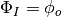, which appears to approach the correct value.